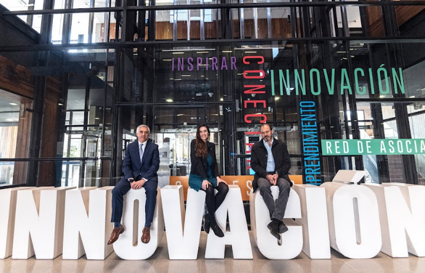

Noticias de Negocios
| Imagen | Título | Categoría | Resumen |
|---|---|---|---|
|  | Startups chilenas van al mundo | Emprendimiento | 16 emprendimientos chilenos fueron seleccionados para una plataforma global. Leer más |
| Corfo capacitará a startups | Emprendimiento | Detectan fallas financieras en startups; lanzan plan obligatorio. Leer más | |
| BancoEstado lanza nueva app para pymes | Finanzas | BancoEstado presenta herramienta digital para mejorar la gestión de pequeñas empresas. Leer más |